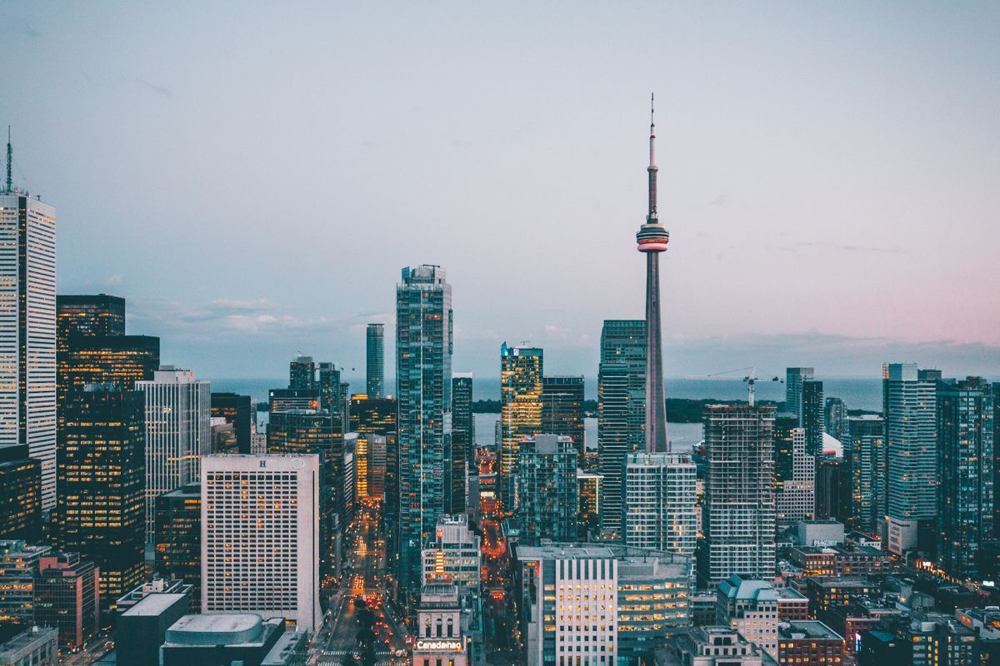

Country Guides
Country GuidesA Canada student visa from Pakistan is the single most searched study-abroad topic in the country right now, and for good reason. Canada has spent the last three years redesigning its entire international student system, and most of what your relatives, neighbours, and the man at the coaching centre believe about it is now outdated. The old fast track is gone, the money threshold has risen, a new provincial letter rules the process, and even the work rights you will arrive with are different from what they were two years ago. This guide is written for 2026 applicants in Pakistan, and it treats every one of those changes as the centre of the story rather than a footnote.
By the time you finish reading, you will be able to explain the entire process to a family member in plain Urdu: what the Canada study permit requirements are, what the realistic study permit processing time from Pakistan looks like, exactly what counts as proof of funds for Canada study permit applications, how the Provincial Attestation Letter works, whether a Canada student visa without IELTS is genuinely possible, what the cost of studying in Canada for Pakistani students really adds up to, and how the post graduation work permit Canada rules shape your plan after the degree.
Why Canada still tops the list for Pakistani students
Canadian universities and colleges sit in a very particular position in the global market: world-ranked English-medium institutions with a genuinely welcoming reputation, a large and established Pakistani diaspora in Toronto, Mississauga, Vancouver, Calgary, and Edmonton, and a clear pathway to work and eventually permanent residence after graduation. For a generation of Pakistani applicants, that combination feels like the complete package. The degree is respected in Pakistan and the Gulf, the campus experience is safe and multicultural, and the post-study offer is the most concrete in the English-speaking world after the UK's competitor programme.
The honest reality in 2026 is that Canada is simultaneously the most desirable and the most complicated destination for Pakistani students. The federal government, alarmed by the explosive growth of international students and the pressure on housing, healthcare, and the labour market, has capped study permits, tightened the post-graduation work permit, raised financial requirements, and retired the fast-track lanes. The result is a system that approves roughly half of all applications globally, where planning beats hope at every stage. Students who adapt to the new Canada get in; students who memorise 2023 advice do not.
There is also a deep structural reason Canadian universities still want you: the cap means every permit matters more. Institutions compete for allocation in each province, so a well-prepared Pakistani applicant with a strong academic record and honest money is genuinely prized. You are not the problem; unread applications are.
A sober second glance: Canada against the alternatives
Because a Canada student visa from Pakistan now demands a bigger money picture and a longer calendar than it once did, compare Canada honestly with its rivals before you commit. The UK offers a faster visa, a two-year graduate route, and a higher brand premium, but a materially larger annual bill and very tight post-(two-year) options. Australia offers a long graduate window and a genuinely welcoming post-study system, but its visa pipeline for Pakistan is slower and its cost profile is similar to Canada's. Germany offers famously low tuition, but the English-medium supply is thinner, the winter is real, and the path to work after study is earnest rather than guaranteed. Malaysia offers speed and affordability with a much weaker post-study promise.
The honest way to read that paragraph is simple: Canada is the destination whose entire architecture — cap, work hours, post-graduation work permit, and PR points — is designed to convert a study degree into a working life in the country. No other mainstream destination is as deliberate about that conversion. If that is your family's goal, the 2026 complexity of Canada is the price of admission to the system, not a reason to abandon it. If your goal is purely academic prestige or a quick affordable credential, Germany or Malaysia may serve you better, and the comparison lives in our Germany guide, UK guide, and Australia guide.
The ten-twenty-ten rule for reading this guide
If you remember nothing else from this article, remember this framing. Canadian decisions turn on three pillars, weighted roughly in order of importance for Pakistani files:
- Ten parts documentation — every certificate, attestation, and bank record must be real, consistent, and correctly presented. Nothing is cosmetic in the IRCC file.
- Twenty parts money clarity — the single most common refusal reason for Pakistani files is funds that exist but cannot be explained. Your money story must be provable, not just present.
- Ten parts genuine intent — a study plan that quietly says "I plan to study and then go home or immigrate legally afterwards" beats a dramatic essay about never leaving.
Keep that balance in your head, and every specific rule below will click into place.
The 2026 rule changes every Pakistani applicant must know first
Before you read a single document checklist, absorb these six changes from the last three years, because they are the difference between a 2024-era application and a 2026-era one.
- The Student Direct Stream (SDS) is dead. On 8 November 2024, IRCC ended the SDS fast track that had served applicants from Pakistan and other listed countries. Everyone — including Pakistani students with a GIC — now applies through the single regular stream. You cannot pay your way to a priority queue any more.
- The Provincial Attestation Letter is now the gate. Most new study permit applicants need a PAL from the province of their school before IRCC will process the application. It is a quota ticket, not a document about you.
- Proof of funds costs more. IRCC raised the living-cost threshold in 2024, and 2026 guidance quotes between CAD 20,635 and CAD 22,895 for a single applicant outside Quebec, before first-year tuition and travel.
- Off-campus work is legal almost full time. Since November 2024, international students can work off campus up to 24 hours per week during term (up from 20) and unlimited during breaks.
- The post-graduation work permit changed shape. College-level graduates now need their field of study to be in demand, and some categories face a language-test requirement. Planning your degree choice around PGWP eligibility is now mandatory.
- Biometrics and medicals still gate the file. Pakistani applicants give biometrics at a Canadian Visa Application Centre (VAC) and, where needed, attend an immigration medical exam with a panel physician. Neither can be skipped.
If you searched for "Canada student visa from Pakistan 2026" because news scared you, that was the right instinct. Now let us turn the fear into a plan.

Canada study permit requirements: the complete baseline
The Canada study permit requirements for Pakistani applicants fall into six clean layers. Master this checklist and you have mastered 80 percent of the application.
The Canada study permit requirements by level of study
The Canada study permit requirements are identical in law for every level, but the practical file differs by program. Undergraduate applicants at universities carry the heaviest expectations: strong HSSC grades, a defensible program choice, and proof that four years of Canadian tuition are fundable. College diploma applicants face tighter genuine-student scrutiny because officers know the diploma shortcut has historically been a visa vehicle; your file must explain why this specific diploma, at this specific college, leads to this specific job. Master's and doctoral applicants enjoy the lightest load of all: PGWP-friendly by default, exempt from the PAL in most cases, and judged mostly on research fit and funding.
The practical reading of this section: if you are a college applicant, build your story with extra care, because the officer will assume nothing about you. If you are a postgraduate applicant, the degree program does most of the talking and the money evidence does the rest. And at every level, the Canada study permit requirements share the same backbone: a DLI acceptance, a PAL where applicable, provable money, and a genuine-purpose letter that survives a sceptical read.
- Acceptance at a Designated Learning Institution (DLI). Your school must be a DLI recognised by the province it sits in. Public universities and public colleges dominate the DLI list; some private colleges are not DLIs and their graduates are ineligible for a post-graduation work permit. Verify DLI status on the official IRCC DLI list, not on the school's own brochure.
- Provincial Attestation Letter. For most new applicants at college or bachelor level, a valid PAL from the province of study is mandatory. Master's and doctoral students at public DLIs are generally exempt, as are some exchange and in-Canada situations.
- Proof of financial support. Enough money for first-year tuition, living costs at the published threshold, and return transportation. Acceptable evidence includes a Guaranteed Investment Certificate (GIC), bank statements covering the last four months, scholarship letters, or a parent sponsor's documented income.
- Identity documents. A passport valid for the intended stay (or a clear plan to extend it) plus two photographs meeting IRCC specifications.
- English or French proof. The regular stream has no blanket IELTS rule, but every DLI sets its own admission language bar, and your language evidence must make the school's letter believable.
- Country-specific extras. Pakistani applicants commonly add a police clearance certificate where requested, family information forms, medical exam reports, and a letter of explanation answering the visa officer's questions directly.
It is a zero-defect game. A missing guardian letter, a photograph that is 1 mm off, or a signature left blank can return the whole file to you after weeks. Build your file like an accountant and you will not fear the officer; ask your DLI's international office for its written Canada study permit requirements summary and check your file against it line by line before the portal closes.
The Provincial Attestation Letter: the piece everyone asks about
The Provincial Attestation Letter (or its territorial equivalent, the TAL) is the most misunderstood document in the entire 2026 process. Here is the clean explanation.
Since January 2024, Canada has run a federal cap on how many new study permit applications it accepts in a calendar year. Each province receives an allocation, and that allocation generates PALs. Your school applies to its provincial government for a PAL on your behalf — you do not apply yourself — and the school issues the letter only if your spot falls within the provincial allocation. IRCC will simply not open a study permit application that needs a PAL but does not have one; the application is returned as incomplete.
Who needs it: most new college and bachelor's applicants. Who is exempt: master's and doctoral students at public DLIs, kindergarten-to-grade-12 students, applicants extending at the same school and level, and a small list of federal priority groups. The exemptions changed as recently as 1 January 2026, when master's and PhD applicants at public DLIs were removed from the PAL requirement, so always re-read the current IRCC PAL page the week you apply.
One sentence to carry into every conversation with your agent or school: the Provincial Attestation Letter is issued by the province to the school, the school passes it to you, and IRCC will not start your file without it. If an agent tells you they can "arrange" a PAL outside that channel, close that conversation — legitimate PALs flow only through the provincial allocation system.
The practical consequences for Pakistani applicants:
- Apply to several schools in different provinces if you can, because Ontario's allocation is enormous but oversubscribed, while smaller provinces are quieter relative to applicants.
- Ask your school directly, in writing, whether a PAL is currently available for your program. Do not accept "we will let you know."
- Do not double-apply the same PAL to two schools. The letter is tied to the institution and the intake.
- Treat the PAL as a gate, not a promise — many PAL-holders still face a full visa vetting of their money.
Can you get a Canada student visa without IELTS?
This is the question Pakistani applicants ask more than any other, and the honest answer is "yes, at the admission level, with conditions — and never automatically at the visa level." Most of the people asking that question are really asking whether a Canada student visa without IELTS can shorten their preparation timeline, and the answer to that is: it can, but only on the university's terms, not yours.
At the university level, several Canadian DLIs — including universities like the University of Winnipeg, Brock, Memorial, Carleton, and Regina among others — accept domestic evidence of English proficiency as an alternative to an exam score: proof that you studied in English, an MOI certificate, or a language-preparatory pathway. That is what makes a Canada student visa without IELTS application credible: the school itself admits you without a formal score, and its letter says so. Pathway programmes (conditional admission plus English language training before the degree) are the most common no-IELTS route into Canadian colleges.
The practical truth about the waiver map is narrower than agents advertise. A Canada student visa without IELTS is realistic at a list of roughly a dozen to twenty DLIs that publish English-proficiency waivers (many in Manitoba, Saskatchewan, and the Atlantic provinces), and those waivers are usually conditional — an English-language exam at the end of the first term, an interview, or a GPS-style assessment. For every province, the waiver operates at the university's pleasure, and the officer processing your file still owns the right to ask for evidence. So treat "no IELTS" as a conditional admission feature, exactly as the tool on our no-IELTS study page explains across every country, and keep a PTE or IELTS slot in reserve for the post-graduation work permit later.
The last piece of the no-IELTS picture is the honest motivation test. Officers are not naive: the phrase "Canada student visa without IELTS" is searched by thousands of applicants who are really asking "can I skip the hard work?" The answer that wins is not "I cannot prepare for a test"; it is "my institution verifies my English through my academic history instead." Keep the MOI letter, the transcript, and the school's waiver policy in your file together, and your Canada student visa without IELTS application reads as a legitimate alternative route rather than an evasion. The country-level language expectations that still apply are summarised in our IELTS-by-country guide, which keeps the whole picture current.
But understand the two ways immigration reality intrudes on this plan. First, IRCC can ask any applicant for language evidence during processing, and an officer who doubts your ability to follow lectures may request a test or refuse on the ground that you are not a genuine student. Second, the post-graduation work permit now carries its own language requirement: since 1 November 2024, applicants whose studies began after that date must prove language ability (that is now also true for English-program graduates in certain categories). Practically: you can absolutely start your Canadian journey without an IELTS score, but you will almost certainly need a valid language test before the work-permit phase. Plan the timeline so the test sits somewhere in the middle, not at the emergency end.
Proof of funds for Canada study permit: the money that matters
Now the deepest, most personal section of this guide, because proof of funds for Canada study permit applications is where most Pakistani files actually fail. The full Pakistani picture of acceptable evidence is also covered in our proof-of-funds guide, but the Canada-specific rules here are the ones your file will be measured against.
Two refusals in three, across every Canadian visa office in South Asia, come back pointing at the financial section — not because the money was missing, but because the proof of funds for Canada study permit file told a story that did not survive a ten-minute check. The section below is written so yours never fails that check. The rule that governs everything: no document in the financial file may rely on money that cannot be traced, and no claim in the financial file may contradict another document in the same file.
IRCC wants two distinct quantities proven: (1) first-year tuition actually payable from the money shown, and (2) living costs at the published threshold — roughly CAD 20,635 to 22,895 for a single applicant outside Quebec — plus return travel. Add tuition of CAD 15,000 to 35,000 for most programs and a realistic Pakistani applicant needs to evidence roughly CAD 30,000 to 55,000 of available, explainable money.
What acceptable evidence looks like
- A Guaranteed Investment Certificate (GIC). A fixed deposit with a Canadian financial institution in your name, secured in Canada. The GIC is no longer mandatory in the regular stream, but it remains the strongest single piece of evidence because it is already in Canada, already in your name, and immune to the "where did this balance come from" question.
- Parental savings with a paper trail. Bank statements covering the last four to six months, plus an income trail that explains the balance: salary slips, business registration and tax returns (NTN records), property, agriculture or rental income, or documented remittances.
- A clean sponsor narrative. If Dad or an uncle funds you, your file needs the sponsor's relationship proof, their income evidence, and one page of honest narrative explaining how the amount was accumulated.
- Scholarship letters and prepayments. A credible scholarship letter reduces the balance required, and a receipt for first-year tuition partially paid reduces it further.
The three money crimes that get Pakistani files refused
- The magical balance. An account that jumps from PKR 200,000 to PKR 4,000,000 two weeks before submission, with no matching income trail. Officers have seen every version of this. Your money must have lived somewhere credibly before it lived in the bank.
- Borrowed-money statements. Some Pakistani families, guided by aggressive agents, "borrow" a statement from a broker. When the officer's verification query arrives and the bank says the document is inconsistent, the refusal is instant — and the fraud marker can follow you into the applicant-facing record for years.
- Income that cannot be multiplied. A family that shows PKR 60,000 monthly income funding a CAD 40,000 year is not credible. Either the income period, the assets, or the sponsor list must grow to match the plan.
The clean version of this section, in one line: the officer must be able to re-derive your balance from your proven income. Build the proof of funds for Canada study permit file until that sentence is true.
The complete 2026 application checklist
Print this, tick in pen, and keep it in the folder you bring everywhere — this is the last checklist a Canada student visa from Pakistan file will ever need:
- Valid passport (valid for the intended stay, ideally several years beyond).
- Letter of acceptance from a DLI with the DLI number.
- Provincial Attestation Letter (where your category requires one).
- Study permit application form IMM 1294, completed online.
- Family information form IMM 5707.
- Proof of funds: GIC certificate or bank statements, sponsor evidence, scholarship letter, tuition receipts.
- Academic documents: SSC, HSSC, degree, and transcripts; HEC attestation or apostille where the DLI requires it.
- English or French evidence: IELTS/PTE/TOEFL result, or the MOI/waiver letter accepted by your DLI.
- Police clearance certificate (if requested for your file).
- Medical exam results from an IRCC panel physician (where applicable to your program or residence).
- Photos meeting IRCC specifications, recent and correctly printed.
- Letter of explanation or study plan, written honestly and tied to evidence.
Submit online through the IRCC GCKey portal or the Sign-In Partner option, pay your fees, and book biometrics at the nearest VAC (Karachi, Lahore, or Islamabad). The biometric record costs CAD 85 and remains valid for ten years.
How the study permit application actually moves
Here is the stage-by-stage journey of a typical file, so you always know where yours stands:
- Acceptance stage. Your DLI accepts you and, where required, issues the PAL through the province. This stage routinely takes two to four weeks after admission decisions.
- Submission stage. You complete the online form, pay the CAD 150 application fee, and upload the checklist. Double-click every upload before you finish.
- Biometrics and medical. You give biometrics at the VAC; a biometric instruction letter arrives from IRCC after submission. Your medical exam, if required, is scheduled with a panel physician and results are sent to IRCC directly.
- Assessment stage. IRCC reviews the file, including eligibility, money, intent, and security checks. This is where the study permit processing time from Pakistan is actually consumed.
- Decision and passport submission. On approval, IRCC issues a port of entry letter of introduction plus the entry documents. You send your passport for the visa stamp if required, then travel.
Study permit processing time from Pakistan: the real calendar
The study permit processing time from Pakistan in 2026 sits between roughly 8 and 15 weeks depending on the season, the completeness of the file, and IRCC's workloads. IRCC publishes live estimates on canada.ca by country and application type; plan with a buffer, not with the best-case number.
| Stage | Typical duration |
|---|---|
| DLI acceptance and PAL issuance | 2 – 4 weeks |
| Online submission and fee payment | 1 – 2 days |
| Biometrics appointment and enrolment | 1 – 2 weeks (slot dependent) |
| Medical exam scheduling and results | 1 – 3 weeks |
| IRCC eligibility and security review | 4 – 10 weeks |
| Port of entry letter and passport stamp | 1 – 2 weeks |
Two things slow the study permit processing time from Pakistan more than anything else, and both are entirely avoidable. The first is the biometric and medical queue: appointments at the VAC and the panel physicians' offices fill weeks ahead in peak season, so book both the moment you receive the instruction letters rather than waiting for the perfect date. The second is additional document requests — when IRCC asks for one more bank statement or one more form, the clock effectively stops until your response lands, and every day of delay pushes your intake. Respond to any request the same day it arrives, in the exact format requested.
IRCC publishes a live processing-times tool for study permits on its official site, and the Pakistan figure hovers in the range this guide quotes. Track your own file in GCKey, check it weekly, and ignore the WhatsApp rumours that "every file is delayed" — the officers publish the real number every week, and the real number is the only one that matters. The official test of both numbers is the IRCC processing-times tool, and the whole application itself runs through the GCKey portal.
If you are targeting a September intake, you should already be inside the system by April at the latest. For a January intake, start the previous July. The worst files are the ones started three months before the deadline, because they collide with biometric queues, medical queues, and the peak-season slowdown simultaneously, and the study permit processing time from Pakistan you planned for quietly becomes the one you have to fight.
The real cost of studying in Canada for Pakistani students
Now the numbers that decide family conversations. The cost of studying in Canada for Pakistani students breaks into tuition, living costs, and upfront overhead; the broader comparison across destinations lives in our study-abroad cost and budget guide:
| Cost item | Typical CAD per year |
|---|---|
| Undergraduate tuition (most universities) | CAD 20,000 – 40,000 |
| Postgraduate coursework tuition | CAD 17,000 – 35,000 |
| College diploma tuition | CAD 12,000 – 22,000 |
| Accommodation (on/near campus) | CAD 8,000 – 18,000 |
| Food and daily expenses | CAD 5,000 – 9,000 |
| Transport, phone, health insurance (private until covered) | CAD 2,000 – 4,000 |
| Off-campus work offset (24 hrs/week, min wages) | − CAD 8,000 – 12,000 |
Total first-year cash families should plan for the whole cost of studying in Canada for Pakistani students: CAD 45,000 to 70,000 for university, CAD 30,000 to 50,000 for college, before the modest work offset above. Compare this honestly with your family's numbers from the start; a degree in Canada that is funded by a six-month borrowed balance is not a scholarship, it is a slow-motion crisis.
Provinces differ. Ontario and British Columbia are expensive; Quebec, Manitoba, Saskatchewan, and the Atlantic provinces are quieter and cheaper, and their allocations are less fought over. Choosing a whole province instead of just a school is now a financial decision with a name: the cost of studying in Canada for Pakistani students falls by ten to twenty percent moving from Toronto to Winnipeg.
Province-by-province cost snapshot for 2026
| Province | Typical university tuition (CAD/yr) | Living cost (CAD/yr) |
|---|---|---|
| Ontario | 28,000 – 45,000 | 14,000 – 20,000 |
| British Columbia | 26,000 – 42,000 | 13,000 – 19,000 |
| Alberta | 20,000 – 32,000 | 11,000 – 16,000 |
| Manitoba / Saskatchewan | 16,000 – 26,000 | 9,000 – 14,000 |
| Atlantic provinces | 15,000 – 25,000 | 9,000 – 13,000 |
| Quebec | 18,000 – 30,000 | 10,000 – 15,000 |
Read those rows against your school list and you will notice something most articles miss: the cost of studying in Canada for Pakistani students is not a single number, it is a spread of roughly two to one between the cheapest and most expensive provinces for the same quality of degree. A Manitoba file and an Ontario file can differ by CAD 20,000 per year while producing equivalent outcomes. When money is the constraint, the province is the biggest financial lever you control, and families that need to stretch a budget can also study the self-funding playbook for reducing that spread further.
Arriving in Canada: the first sixty days
When your visa arrives, the real semester begins at the border. On arrival you present your port of entry letter, passport, acceptance letter, and proof of funds; the border officer issues the actual study permit and often asks a few questions. Land, then move in this order:
- Get a Social Insurance Number (SIN) immediately — you cannot work off campus, open certain accounts, or receive a pay slip without it.
- Open a bank account and arrange a transfer of your proof-of-funds balance into it, because your file promised money you can actually access.
- Enrol, attend orientations, and register for the health insurance your province expects from international students (private or provincial, depending on the province).
- Find housing through your school's international student office first, and never wire a full year of rent to a stranger.
- Respect the 24-hour off-campus work cap during term and unlimited break work, keep employer records, file taxes from your first year, and keep your study permit and passport valid as a pair.
One cultural note that saves Pakistani students real pain: Canadian communication is indirect but the rules are literal. If an office says a document is missing, it is missing. Bring paperwork for everything, even the things you think are obvious, and do not leave a meeting until the official confirms exactly what happens next.
Post graduation work permit Canada: the plan after the degree
The post graduation work permit Canada programme is the biggest single reason Pakistani students choose Canada, and it has quietly changed shape. Understand the 2026 version:
- Eligibility by institution. You must graduate from a DLI program that qualifies — public universities and colleges broadly qualify; private institutions and some recently added fields face restrictions.
- Length by program. The permit generally matches your program length up to three years. An eight-month college program earns roughly eight months; a two-year program commonly earns three years. Check your program length against the post graduation work permit Canada calculator the day you enrol, because a permit that matches eleven months instead of twelve changes the entire plan.
- Language requirement. Applications for the post graduation work permit Canada now require a valid language test result (this applies to the English-stream post-November-2024 cohort as well as French-stream candidates).
- Field-of-study nuance. College-level graduates (and some others) must have completed a program linked to an eligible field of study — the list rotates with labour-market data, skewed toward STEM, health, trades, and agriculture.
The strategic lesson: the course you choose in Pakistan determines the work permit you receive in Canada. A "cheaper general diploma" that sits outside the eligible-fields list can produce a degree with zero work permit. Choose the program first for its PGWP eligibility, then for its price.
Applying for the post graduation work permit Canada is administrative but not automatic: you file your application while your study permit is still valid (the window runs from before your final marks are released to 180 days after your degree is conferred), you pay the fee, and you must hold a valid passport covering the permit's full length if you want the maximum term. IRCC's own PGWP page publishes the current eligibility and language requirements, and the DLI list check belongs on the same screen. Begin the application the day your final transcript is issued, so the gap between study and work never touches your status.
Why Pakistani applications get refused, and how to fix it
The twelve most common reasons applications from Pakistan fail at Canadian post offices are documented in our full refusals guide. The trends specific to Canada are these three, with their fixes:
- Money without a story (the majority). Fix it as the proof-of-funds section above describes: income trail, assets, honest narrative.
- School-choice credibility. An officer who sees you choosing an expensive private college in a field with weak employment evidence will suspect the program is a visa vehicle. Fix it by choosing an eligible, defensible program and saying why it fits your career.
- Home-ties gaps. The officer must see a credible draw home — family, property, employment, or a plan connected to Pakistan. Fix it by documenting ties without pretending you will never visit Canada again.
For the full walkthrough of refusal causes and their fixes across every destination, read our guide to student visa refusal reasons in Pakistan.
A 12-month Canada timeline for Pakistani applicants
| Months before intake | What to do |
|---|---|
| 12 – 10 | Shortlist DLIs and programs; verify PGWP eligibility and DLI status; begin IELTS/PTE preparation; start collecting money evidence. |
| 10 – 8 | Take the language test; obtain HEC attestations; request transcripts and references. |
| 8 – 5 | Submit applications; apply for PAL through your school; accept the best offer. |
| 5 – 3 | Lock documents into the online file; pay fees; book biometrics and medicals early. |
| 3 – 1 | Track processing through GCKey and the live study permit processing time from Pakistan figures; respond to any additional document requests the same day; book flights only after the visa arrives. |
| Last month | Arrange first-week housing and transport, get the SIN plan ready, brief your family on remittance and emergency contacts. |
Notice the pattern: money evidence and language test come first, applications second, and the visa submission third. Students who reverse that order spend the whole cycle chasing their own tail.
The Pakistan-paperwork minefield: attestations, NADRA, and translations
Every Canadian file from Pakistan carries a mandatory layer of local bureaucracy that prepared candidates move through early and prepared candidates alone survive without drama. Your academic documents need HEC attestation — degree, transcripts, and in some cases your intermediate certificates — and several DLIs ask for the same documents legalised further. Where a DLI, province, or Family Information form asks for family identity, the NADRA Family Registration Certificate (FRC, issued in English) is the cleanest proof and the most common missing document in rushed files.
Two more traps wait in the translation and photocopy stage. If any document is in Urdu or a regional language, have it professionally translated into English by a recognised translator and keep the certified copy of the translation in the file; a home-made translation is a refusal waiting to happen. And photocopy every stamp page of your old passports, every visa page, and every entry-exit stamp, because IRCC's Pakistan-specific instructions ask for the last five years of travel history. Missing pages produce processing delays that eat the exact weeks your intake depends on.
The whole local-certification pipeline for every country sits in our full visa documentation coverage; for Canada, start HEC attestation and the FRC the same week you receive your school's offer, not the same week you plan to submit.
A worked example: the money file that survives scrutiny
Let us build one proof of funds for Canada study permit example from start to finish, because a paragraph of theory does what a concrete file cannot, and building money proof that matches the cost of studying in Canada for Pakistani students is the entire game. A Lahore family plans a two-year college diploma in supply chain, tuition CAD 16,000 per year. The file needs roughly CAD 16,000 tuition plus CAD 20,635 living costs plus CAD 900 travel, a total near CAD 38,000.
The family's real money: father owns a textile unit with an annual declared profit around PKR 4.2 million, the business pays NTN-reported taxes, a mutually-agreed property is registered in his name, and a documented PKR 12 million sits in two accounts held for six months. The file opens with a one-page sponsor letter from the father (in English), supported by: six months of both bank statements, the NTN certificate and last two years of filed returns, the business registration and a summary balance sheet, a translated property title and valuation note, the FRC proving the father-son relationship, and a copy of the son's admission letter and tuition schedule. The son's file also contains a small personal account showing his own consistent PKR 40,000 monthly income from freelance work, proving he generates part of his living expenses.
Everything in this file is real, dated, and mutually consistent. Nothing contradicts the sponsor letter. The officer can multiply the declared profit by two to three years and arrive at the balance. That is what a proof of funds for Canada study permit file must always look like, and it is exactly how the strongest Pakistani files in 2026 look.
Part-time work while you study: your rights at the 2026 cap
Since November 2024, the old twenty-hour cap became a twenty-four-hour rule, and it is now permanent for most students at qualifying institutions. Off-campus work is capped at 24 hours per week during term and is unlimited during scheduled breaks, while on-campus work with your institution does not count against the cap in most cases. This is the single most useful financial feature of a Canada student visa from Pakistan plan, and it is described in full in our part-time jobs guide.
Realistically, a Pakistani student working 24 hours at minimum wage (roughly CAD 15 to 19 per hour depending on province) adds CAD 1,200 to 1,600 per month before tax — a genuinely meaningful contribution to living costs. Tax reality applies: you pay tax on earned income, you need a Social Insurance Number on day one, and employers verify it. Work does not fund tuition; it funds a good share of living, and the honest way to treat it is that way.
After your post-graduation work permit: the road to permanent residence
The post graduation work permit Canada is not the end of the story; it is the entry ticket to the immigration pathway for which the whole system was designed. Canadian permanent residence runs through several streams, and the two that matter to graduates are the Canadian Experience Class (CEC) inside Express Entry and various provincial nominee program (PNP) streams that reward provincial study and work. Canadian work experience under your PGWP feeds directly into CRS points, and most Pakistani graduates convert their work permit into PR within one to three years of working.
The strategic depth of this section: choose your first job after graduation with the PR points in mind. In-demand occupations (health, STEM, trades, agriculture) earn more points and more provincial invitations. A work permit is a visa; a job in an eligible field under the right NOC code is a future residence card. Plan both from the semester you graduate.
Final thoughts
A Canada student visa from Pakistan is harder to obtain in 2026 than it was in 2022, and it is still one of the most rational investments a Pakistani family can make when the numbers are honest. The new system rewards planning: complete documentation, clean and explainable money, a defensible program choice, and a study plan that owns its purpose. None of those things require luck or connections. They require the discipline this guide just gave you a structure for.
Start where the officers would start: with your money story. Then the school and program choice follows logically, the letter queue follows the choice, and the calendar follows everything. The Canada your family imagines — the safe campuses, the multicultural cities, the work-permit path — still exists for the applicant who plans a Canada student visa from Pakistan file the way this guide describes. The road to it is just better signposted now, and you are holding the map.